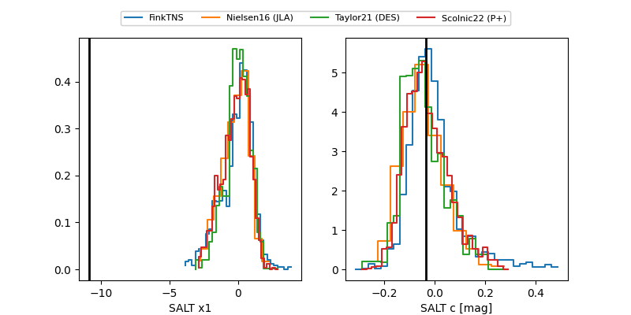

FINK: ZTF25abmzkwt
Lasair: ZTF25abmzkwt
ALeRCE: ZTF25abmzkwt
ZTF25abmzkwt (ztf,fink)
equatorial (ra, dec) = (108.7206,+11.84742)
galactic (l, b) = (204.9135,+10.51914)

last ztfr=18.66
6 ztfr detections